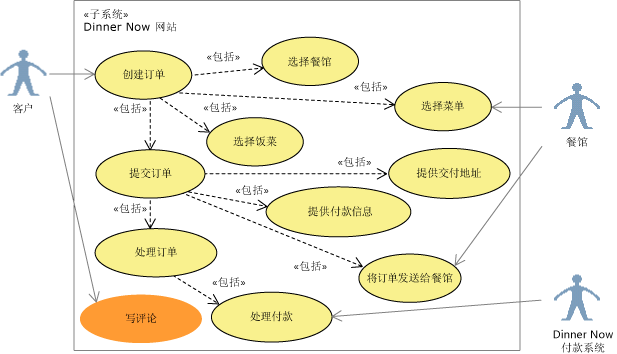
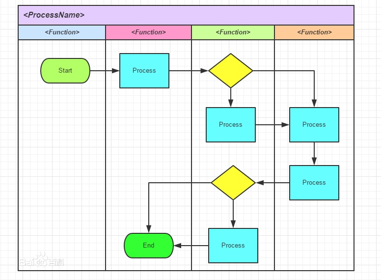
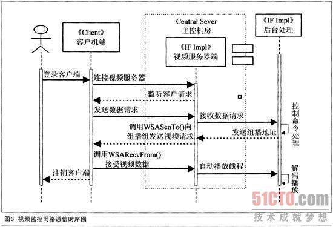

软件工程基础
一、软件过程
软件过程的概念
Software Process，也成为软件生存周期过程，是指软件生存周期内的一系列相关过程。
过程：活动的集合
活动：任务的集合
任务：要起到把输入加工成输出的作用
活动的执行可以是：
- 顺序的
- 迭代的（重复的）
- 并行的
- 嵌套的
- 有条件地引发的
经典软件过程模型的特点（瀑布模型、增量模型、演化模型、统一过程模型）
瀑布模型特点：
- 各个阶段的顺序性和依赖性
- 划分逻辑设计和物理设计，尽可能推迟程序的物理实现。
- 每个阶段必须完成规定的文档，对其中问题通过复审及早发现，及早解决。
优点：
- 可强迫开发人员采用规范的方法。
- 严格规定了每个阶段必须提交的文档。
- 要求每个阶段交出的所有产品都必须经过质量保证小组的仔细验证。
缺点：
- 用户需求不清是一个常见情况，瀑布模型不接受。
- 错误发现迟导致大量返工。
- 线性模型导致的开发进度缓慢。
增量模型
与瀑布模型相比，有以下优点：
1. 多个版本可以并行开发
2. 每个版本都是可运行的产品，每一个线性序列产生软件的一个可发布的增量，他必须是可运行的产品。
3. 需求在开发早起是明确的。
4. 需求不明确或者变更导致的返工风险更大。
演化模型（最广泛的模型）
自己总结：支持并行开发，增量式递交产品，加快了开发进度，通过迭代环节技术风险和系统集成风险，核心需求确定后即可开始开发，后续变更需求通过迭代演示及时收集改正，保证开发出来的系统真正解决用户的问题。缺点是复杂，迭代的规划和控制是难点，也是成功的关键。
统一过程模型
UP
包括以下三大组成部分：
- 一整套成功开发软件的原理和最佳实践。
- 过程模型和相关的内容模板库。
- 过程定义工具。
把软件开发生命周期分为：
- 先启，所有项目干系人就目标达成共识。目标里程碑。
- 精化，建立软件架构基线，解决技术风险，以便为软件的详细设计和实现提供稳定的基础。架构里程碑。
- 构建，基于已建立基线的架构完成系统开发。初始能力里程碑。
- 产品化，确保最终用户可以使用软件。发布里程碑。
每个阶段的结束就是一个业务决策里程碑（大里程碑）
过程评估与CMM/CMMI的基本概念
关于软件开发过程的问题：
* 所定义的软件过程是否适合本组织或本团队？
* 过程绩效如何？
* 软件过程能力成熟度为几级？
* 哪些过程域做的很好，哪些又有不足？
对以上为题的评估，主要有：
* CMM/CMMI
* ISO/IEC 15504
* ISO/IEC 20000
* Bootstrap
* Trillium
* 等
CMM/CMMi:
80年代中期，由美国联盟政府提出，要对软件承包商的软件开发能力进行评估。CMU/SEI与1987年研究发布了Capability Maturity Mode 也就是CMM。CMM在发展过程中衍生出一系列模型，包括：
- Software CMM SW-CMM 软件CMM
- System Engineering CMM SE-CMM 系统工程CMM
- Software Acquisition CMM SA-CMM 软件采购CMM
- Integrated Product Team CMM IPT-CMM 集成产品群组CMM
- People CMM P-CMM 人力资源CMM
为了减少采用多种成熟度模型引起不必要的冲突和混淆，解决模型间的细条问题，CMI/SEI在2002年研究发布了软件成熟度模型集成 Capability Matruity Model Integration 也就是CMMI
CMMI 是一个标准簇，它包括以下内容：
- CMMI for Development CMMI-DEV 开发模型
- CMMI for Service CMMI-SVC 服务模型
- CMMI for Acquisition CMMI-ACQ 采购模型
CMMI用两种表示法支持不同的改进方法：
- 组织成熟度方法（阶梯式模型），强调组织成熟度。
- 过程能力方法（连续式模型），强调单个过程域的能力。
CMMI 阶梯式模型将软件组织的成熟度分为：
1 初始级
2 已管理级
3 已定义级
4 定量管理级
5 持续优化级
进化途径为：
1. 有纪律的过程 2
2. 标准一致的过程 3
3. 可预测的过程 4
4. 不断改进的过程 5
CMMI 连续式模型将评估划分为4大块：
- 过程管理（组织）
- 项目管理（项目）
- 工程管理（开发）
- 支持 （服务）
敏捷宣言与敏捷过程的特点
四个核心价值观：
- 注重个人和交互胜于过程和工具。
- 注重可用的软件胜于事无巨细的文档。
- 注重客户协作胜于合同谈判。
- 注重随机应变胜于循规蹈矩（恪守计划）。
十二条基本原则：
- 最优先的目标是通过尽早地，持续地交付高价值的软件来满足客户需要。
- 即使到了开发的后期，也欢迎改变需求。
- 经常交付可以工作的软件，交付的间隔可以从几周到几个月，交付的时间间隔越短越好。
- 在整个项目开发期间，业务人员和开发人员必须每天在一起工作。
- 围绕被激励起来的的来构建项目。给他们提供所需要的环境和支持，并且信任他们能够完成工作。
- 在团队内部，最具有效果并且富有销路的传递信息的方法，就是面对面的交流。
- 可以工作的软件是进度的主要度量标准。
- 敏捷过程提倡可持续开发。出资人，开发人员和用户应该总是维持不变的节奏。
- 对卓越技术与良好设计的不断追求有助于提高敏捷性。
- 简单-尽可能减少工作量的艺术至关重要。
- 最好的架构、需求和设计都源自自我组织的团队。
- 每隔一定时间，团队都要总结如何更有效率，然后相应地调整自己的行为。
二、软件需求
软件需求的概念；
软件需求的概念
软件需求是
1. 用户解决问题或达到目标所需条件或权能（Capability）
2. 系统或系统部件要满足合同、标准、规范或其他正式规定文档所需具有的条件或权能。
3. 一种反应1、2所述条件或权能的文档说明。
软件需求包括功能性需求和非功能性需求，非功能性需求对设计和实现提出了限制，比如性能要求，质量标准或涉及限制等。
以上为百科定义
需求:系统必须符合的条件或能力。软件系统必须符合的条件或能力，一般用FURPS+模型定义。
- 功能性：Functionality。特性、功能和安全性。
- 易用性：Usability。用于衡量准备输入、操作盒理解产品输出所付出的努力。
- 可靠性：Reliability。可靠性是软件无故障执行一段时间的概率。
- 性能：Performanc。性能需求是在功能需求基础上规定的性能参数，包括速度、效率、可用性、准确性、吞吐量、响应时间、资源使用情况。
- 可支持性：Supportability。可支持性需求表明进行系统测试、安装、扩展、移植等工作时所需工作量的大小。
其中UPRS合称为非功能需求，或软件质量属性。+是一些补充的需求，比如：
- 设计约束：Design Constraints。规定或约束了系统的设计，通常任何不允许有一个以上设计选项的需求都可以认为是一个设计约束，例如必须采用某种算法，必须使用某种数据库。
- 实现需求：Implementation Requirements。规定了系统必须与之交互操作的外部软件或硬件，以及对这种交互操作所采用的格式、时间或其他因素的约束。
- 接口需求：Interface Requirements：规定了系统必须与之交互操作的外部软件或硬件，以及对这种交互操作所采用的格式，时间或其他因素的约束。
- 物理需求：Physical Requirements：规定了系统必须具备的物理特征，可用来代表硬件要求，如物理网络配置需求。
软件需求关注的是待开发的系统是什么，而不是如何去开发。
需求工程的基本过程
软件需求包括3个层次：
1. 项目干系人需求：Stakeholder Requests，既原始需求，是开发团队调研获得项目干系人对系统的要求。
2. 前景文档：Vision，既概要需求，用于记录关键的用户需要和系统特性。
3. 软件需求规约：Software Requirement Specification SRS，正式的详细软件需求。
需求工程的基本过程：
- 需求获取
- 需求分析
- 需求定义
- 需求验证
- 需求管理
需求获取包括：
- 项目前景文档
- 术语表
- 项目干系人需求
用例和场景建模及其UML表达
用例图
用来描述软件系统的上下文范围以及他提供的功能的概览视图。它从黑盒的角度，描述了谁（或什么）与系统交互，外部希望系统做些什么。

用例图的基本元素包括
- 执行者：是与系统交互的实体，可以是人，其他外接的硬件设备或系统。执行者位于子系统外，用人来表示。
- 用例：代表执行者希望系统为他们做什么，用椭圆表示，用例不仅仅是系统可以提供的功能，从执行者来看，用例必须是一个完整的活动流程，为使用者提供
价值。 - 关系：包括
执行者和用例间的关系、用例和用例间的关系和执行者与执行者之间的关系。执行者和用例间的关系只有一种，既关联，标识哪个执行者使用哪个用例。用例之间有三种关系：包含、扩展和泛化。执行者之间的关系只有一种：泛化。
活动图
用于刻画一个系统或子系统的工作流程，也可用于描述用例内部的事件流。
活动图的基本元素包括：
- 动作：Action。是行为的基本单元，一个活动可包含多个动作。动作用圆角矩形标识。
- 控制流：Control Flow。用来表示从一个动作到另一个动作的流的控制，用一条带箭头的直线表示。
- 控制节点：Control Node。用于协调动作的节点，他决定了活动图的流程。控制节点分为
初始节点，终止节点，判断节点，合并节点，分叉节点，汇合节点 - 对象节点：Object Node。是动作处理的额数据，用矩形表示。
控制节点包括：
- 初始节点：活动开始的节点，用实心圆标识。
- 终止节点：活动结束的节点，细分为活动终止和流终止。分别用带十字叉的元和带边框的实心圆表示。网上一般都是流终止，书上是活动终止。
- 分叉节点：并发流开始。
- 汇合节点：并发流结束。
- 判断节点：用菱形符号表示。一个判断节点可以有一个进入流和多个离去流。在每个离去流上防止一个布尔表达式，在进入这个分支时判断一次。在所有离去流中，器监护条件应该覆盖所有可能性（不然控制流可能会冻结），同事不应该重叠（否则控制流可能有二义性）。
- 合并节点：也用菱形符号表示，一个合并节点可以有多喝进入流和一个离去流。他可以将多个控制路径重新合并，就是说后边都一样了。离去流向的动作会被执行输入流动作数量的和次。
对象节点
是动作处理的数据，用举行表示。在某些情况下，看到活动中操作的对象会比较有用。但是在所有活动图中这样做会导致活动图变得复杂和臃肿。
分区和泳道
活动图中的元素可以用分区（Partition），泳道（Swimlane）来分组。分组的目的是说明具体活动的责任。
泳道
泳道可以是一个业务单位、部门、小组、执行者、系统、子系统、对象。每个泳道都可以被命名，表示负责者。
个人理解就是监护职能划分。

分区
好像和泳道是一回事。
时序图
状态机可以刻画专注于对象内部的行为。而时序图和通信图可以刻画关注与对象之间的协作。
时序图，又称为序列图、顺序图。它通过描述对象之间发送消息的时间顺序显示多个对象之间的动态合作。时序图用于跟踪同一个上下文环境中一个用例场景的执行，当执行一个场景时，时序图中的每条消息对应了一个类操作或状态机中引起转换的触发事件。

时序图以二维图的形式刻画对象间的动态交互。垂直维是时间(Time)，用于表示对象之间传送消息的时间顺序。水平维是角色(Role),每个角色有一个名称和一条生命线（Lifeline）。生命线代表整个交互过程中对象的生命期，用垂直虚线表示。生命线之间的箭头连线代表消息（Message）。当对象发送或接收消息时，生命线用双条实线表示。
消息分为3类：
- 同步消息，既操作调用，用带箭头实心线。
- 异步消息，带开放箭头实心线。
- 返回消息，带开放箭头的虚线。（书上写实线，但画的是虚线）
序列片段可以用来简化时序图，也可以用来表示时序图中的流程控制结构，它主要包括：
- 交互使用：Interaction Use 左上角ref
- 循环：Loop 左上角loop
- 条件：Conditional Fragment 左上角alt
- 并发：Parallel Fragment 左上角par
需求工程的基本过程；分层数据流模型；用例和场景建模及其UML表达（用例图、活动图、泳道图、顺序图）；数据模型建模及其UML表达（类图）；行为模型建模及其UML表达（状态机图）。
三、软件设计与构造
软件体系结构及体系结构风格的概念；设计模式的概念；模块化设计的基本思想及概念（抽象、分解、模块化、封装、信息隐藏、功能独立）；软件重构的概念；软件体系结构的UML建模（包图、类图、构件图、顺序图、部署图）；接口的概念；面向对象设计原则（开闭原则、Liskov替换原则、依赖转置原则、接口隔离原则）；内聚与耦合的概念、常见的内聚和耦合类型。
四、软件测试
软件测试及测试用例的概念；单元测试、集成测试、确认测试、系统测试、回归测试的概念；调试的概念、调试与测试的关系；测试覆盖度的概念；白盒测试、黑盒测试的概念；代码圈复杂度的计算方法；白盒测试中的基本路径测试方法；黑盒测试中的等价类划分方法。
新大纲
【临时重发】2017年复旦自主命题专业课：《软件工程专业基础综合》考试大纲
2017-06-04MSE热线复旦MSE热线
说明：参考书目未指定，因为一般的国内本科阶段教材都能找到相应知识点
第一部分软件工程基础
考试题型：概念问答题、实践案例题
总分：50分
一、软件过程
软件过程的概念；经典软件过程模型的特点（瀑布模型、增量模型、演化模型、统一过程模型）；过程评估与CMM/CMMI的基本概念；敏捷宣言与敏捷过程的特点。
二、软件需求
软件需求的概念；需求工程的基本过程；分层数据流模型；用例和场景建模及其UML表达（用例图、活动图、泳道图、顺序图）；数据模型建模及其UML表达（类图）；行为模型建模及其UML表达（状态机图）。
三、软件设计与构造
软件体系结构及体系结构风格的概念；设计模式的概念；模块化设计的基本思想及概念（抽象、分解、模块化、封装、信息隐藏、功能独立）；软件重构的概念；软件体系结构的UML建模（包图、类图、构件图、顺序图、部署图）；接口的概念；面向对象设计原则（开闭原则、Liskov替换原则、依赖转置原则、接口隔离原则）；内聚与耦合的概念、常见的内聚和耦合类型。
四、软件测试
软件测试及测试用例的概念；单元测试、集成测试、确认测试、系统测试、回归测试的概念；调试的概念、调试与测试的关系；测试覆盖度的概念；白盒测试、黑盒测试的概念；代码圈复杂度的计算方法；白盒测试中的基本路径测试方法；黑盒测试中的等价类划分方法。
第二部分计算机系统基础
考试题型：问答、分析
总分：40分
一、处理器体系结构
内容：CPU中的时序电路、单周期处理器的设计、流水线处理器的基本原理、Data Hazard的处理、流水线设计中的其他问题
二、优化程序性能
内容：优化程序性能、优化编译器的能力和局限性以及表示程序性能、特定体系结构或应用特性的性能优化、限制因素、确认和消除性能瓶颈
三、存储器结构及虚拟存储器
内容：局部性、存储器层级结构、计算机高速缓存器原理、高速缓存对性能的影响、地址空间、虚拟存储器、虚拟内存的管理、翻译和映射、TLB、动态存储器分配和垃圾收集
四、链接、进程及并发编程
内容：静态链接、目标文件、符号和符号表、重定位和加载、动态链接库、异常和进程、进程控制和信号、进程间的通信、进程间信号量的控制、信号量，各种并发编程模式，共享变量和线程同步，其他并行问题
五、系统级I/O和网络编程
内容：I/O相关概念、文件及文件操作、共享文件、网络编程、客户端-服务器模型，套接字接口、HTTP请求，Web服务器
第三部分数据结构
考试题型：问答、分析、编程（廖老师：可用自己熟悉的程序语言、伪代码均可）
总分：60分
一、栈（Stack）、队列（Queue）和向量（Vector）
内容:
单链表,双向链表,环形链表,带哨兵节点的链表;
栈的基本概念和性质,栈ADT及其顺序,链接实现;栈的应用;栈与递归;
队列的基本概念和性质,队列ADT及其顺序,链接实现;队列的应用;
向量基本概念和性质;向量ADT及其数组、链接实现;
二、树
内容: 树的基本概念和术语;树的前序,中序,后序,层次序遍历;
二叉树及其性质;普通树与二叉树的转换;
树的存储结构,标准形式;完全树(complete tree)的数组形式存储;
树的应用,Huffman树的定义与应用;
三、查找(search)
内容: 查找的基本概念;对线性关系结构的查找,顺序查找,二分查找;
Hash查找法,常见的Hash函数(直接定址法,随机数法),hash冲突的概念, 解决冲突的方法(开散列方法/拉链法,闭散列方法/开址定址法),二次聚集现象;
BST树定义,性质,ADT及其实现,BST树查找,插入,删除算法;
平衡树 (AVL) 的定义,性质,ADT及其实现,平衡树查找,插入算法,平衡因子的概念;
优先队列与堆,堆的定义,堆的生成,调整算法;范围查询;
四、排序
内容: 排序基本概念;插入排序,希尔排序,选择排序,快速排序,合并排序,基数排序等排序算法基本思想,算法代码及基本的时间复杂度分析
五、图
内容：图的基本概念;图的存储结构,邻接矩阵,邻接表;图的遍历,广度度优先遍历和深度优先遍历;最小生成树基本概念,Prim算法,Kruskal算法;最短路径问题,广度优先遍历算法,Dijkstra算法,Floyd算法;拓扑排序。
特色方向报名联系老师：廖炳华 老师
特色方向报名老师联系方式：（021）13012893863（含微信）；55664335-809；liaobh@fudan.edu.cn。

Copyright © 2015 Powered by MWeb, Theme used GitHub CSS.